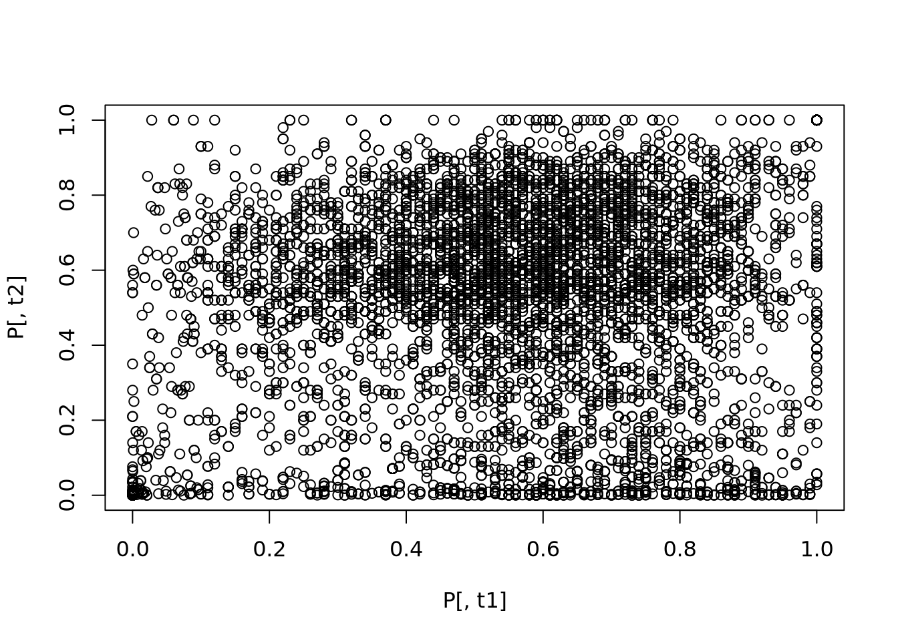
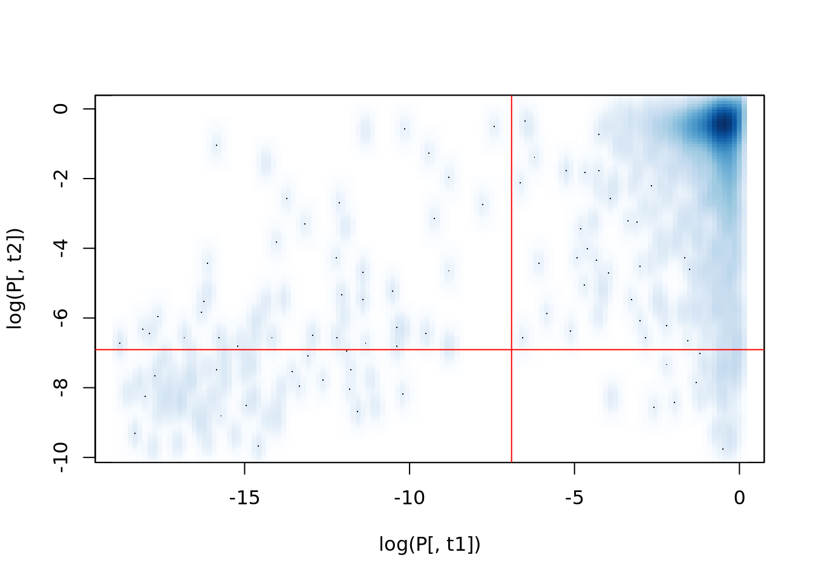

Code
library(pheatmap)Thomas Manke
Define libraries required for this project
Steps: extract only p-values from full data, define proper names for rows, remove columns
# Beware of slow connections !
chip="http://jura.wi.mit.edu/young_public/regulatory_network/binding_by_gene.tsv"
D=read.csv(chip, sep="\t", skip=1) # skip first line
### some filtering
rownames(D)=D[,1] # ORF-symbols in column 1, keep them as rownames
ic=c(1:4,seq(6,230,by=2)) # define column indices to be excluded (only keep p-values)
P=D[,-ic] # new data-frame of p-values, exclude superfluous columns and ratios
####
# save cleaned data (only p-values) to file - for future use
# use write.table instead of write.csv - as I want to have tab-seperation
write.table(P, file="data/chip.tsv", sep="\t", quote=FALSE) Let’s start with a cleaned-up data set.
Now available at “https://raw.githubusercontent.com/maxplanck-ie/Rintro/master/data/chip.tsv” (you might want to locate the raw file on https://github.com/maxplanck-ie/Rintro/).
Faster: have it local
Inspect data. Below are some ideas.
Try this iteratively on the console. So that you don’t clutter your notebook.
Query: How many genes (actually: intergenic regions) are in this data frame?
This might be slow.
Some genes (rows) have no associated TF. Some TF target no gene.
Query: What is the dimension of the filtered matrix B


Correlation Coefficient: 0.7312521.
FALSE TRUE
6076 194 [1] "YBL072C" "YBL087C" "YBL092W" "YBL093C" "YBR084C-A" "YBR085W"
[7] "YBR116C" "YBR117C" "YBR118W" "YBR126C" "YBR181C" "YBR188C"
[13] "YBR189W" "YBR190W" "YBR191W" "YDL060W" "YDL061C" "YDL075W"
[19] "YDL076C" "YDL082W" "YDL083C" "YDL130W" "YDL133C-A" "YDL133W"
[25] "YDL136W" "YDL184C" "YDL191W" "YDR024W" "YDR025W" "YDR064W"
[31] "YDR384C" "YDR385W" "YDR418W" "YDR447C" "YDR448W" "YDR449C"
[37] "YDR450W" "YDR470C" "YDR471W" "YDR500C" "YDR501W" "YEL008W"
[43] "YEL009C" "YEL054C" "YER056C-A" "YER074W" "YER101C" "YER102W"
[49] "YER116C" "YER117W" "YER130C" "YER131W" "YFL034C-A" "YFL034W"
[55] "YFR031C-A" "YFR032C-A" "YGL030W" "YGL031C" "YGL100W" "YGL103W"
[61] "YGL104C" "YGL123W" "YGL124C" "YGL135W" "YGL136C" "YGL147C"
[67] "YGL189C" "YGR027C" "YGR033C" "YGR034W" "YGR085C" "YGR117C"
[73] "YGR118W" "YGR148C" "YGR149W" "YGR213C" "YGR214W" "YHL001W"
[79] "YHL015W" "YHL016C" "YHL033C" "YHR021C" "YHR021W-A" "YHR141C"
[85] "YHR142W" "YHR203C" "YHR204W" "YIL018W" "YIL069C" "YIL133C"
[91] "YIL148W" "YIL149C" "YJL134W" "YJL135W" "YJL136C" "YJL177W"
[97] "YJL178C" "YJL189W" "YJL190C" "YJL191W" "YJL192C" "YJR123W"
[103] "YJR145C" "YJR146W" "YJR147W" "YKL006C-A" "YKL006W" "YKL156W"
[109] "YKL180W" "YKR057W" "YKR094C" "YKR095W" "YLL043W" "YLL045C"
[115] "YLR029C" "YLR030W" "YLR047C" "YLR048W" "YLR061W" "YLR074C"
[121] "YLR075W" "YLR166C" "YLR167W" "YLR183C" "YLR184W" "YLR185W"
[127] "YLR264W" "YLR287C-A" "YLR325C" "YLR326W" "YLR333C" "YLR337C"
[133] "YLR340W" "YLR344W" "YLR367W" "YLR387C" "YLR388W" "YLR406C"
[139] "YLR407W" "YLR441C" "YLR447C" "YLR448W" "YML024W" "YML025C"
[145] "YML026C" "YML063W" "YML064C" "YML073C" "YMR116C" "YMR142C"
[151] "YMR143W" "YMR194W" "YMR229C" "YMR230W" "YMR242C" "YNL067W"
[157] "YNL068C" "YNL069C" "YNL096C" "YNL162W" "YNL163C" "YNL178W"
[163] "YNL302C" "YOL039W" "YOL040C" "YOL120C" "YOL121C" "YOL127W"
[169] "YOL128C" "YOR095C" "YOR096W" "YOR182C" "YOR183W" "YOR234C"
[175] "YOR235W" "YOR292C" "YOR293W" "YOR312C" "YOR355W" "YOR369C"
[181] "YPL079W" "YPL080C" "YPL090C" "YPL131W" "YPL143W" "YPL199C"
[187] "YPL249C-A" "YPR042C" "YPR043W" "YPR080W" "YPR102C" "YPR103W"
[193] "YPR131C" "YPR132W"
FALSE TRUE
FALSE 5989 87
TRUE 75 119
Fisher's Exact Test for Count Data
data: tb
p-value < 2.2e-16
alternative hypothesis: true odds ratio is not equal to 1
95 percent confidence interval:
75.19957 157.98637
sample estimates:
odds ratio
108.6888 upsetR is better (more general) than Venn diagrams
---
title: "P01: Data Exploration; Regulatory Modules from ChIP-seq"
author: "Thomas Manke"
categories:
- pheatmap
- upSetR
- ChIP data
- Fisher Exact Test
---
```{r setup, include=FALSE}
knitr::opts_chunk$set(echo = TRUE)
knitr::opts_chunk$set(cache=TRUE)
```
# Goal
- Input: genome-wide binding data for 113 transcription factors in yeast (ChIP-chip): --> 6000 x 113 matrix
- Analysis: identify combinations of TF
- Output: a reproducible analysis document (Rmd) and report (html)
- Reference: Lee et al. (2002) Transcriptional Regulatory Networks in Saccharomyces cerevisea.
- Data Set: chip="http://jura.wi.mit.edu/young_public/regulatory_network/binding_by_gene.tsv"
# Setup
Define libraries required for this project
```{r}
library(pheatmap)
```
# Skipped: Pre-processing
Steps: extract only p-values from full data, define proper names for rows, remove columns
```{r preprocessing, eval=FALSE}
# Beware of slow connections !
chip="http://jura.wi.mit.edu/young_public/regulatory_network/binding_by_gene.tsv"
D=read.csv(chip, sep="\t", skip=1) # skip first line
### some filtering
rownames(D)=D[,1] # ORF-symbols in column 1, keep them as rownames
ic=c(1:4,seq(6,230,by=2)) # define column indices to be excluded (only keep p-values)
P=D[,-ic] # new data-frame of p-values, exclude superfluous columns and ratios
####
# save cleaned data (only p-values) to file - for future use
# use write.table instead of write.csv - as I want to have tab-seperation
write.table(P, file="data/chip.tsv", sep="\t", quote=FALSE)
```
# Read Clean Data
Let's start with a cleaned-up data set.
Now available at "https://raw.githubusercontent.com/maxplanck-ie/Rintro/master/data/chip.tsv"
(you might want to locate the *raw* file on https://github.com/maxplanck-ie/Rintro/).
Faster: have it local
```{r read}
fn="https://raw.githubusercontent.com/maxplanck-ie/Rintro/master/data/chip.tsv" # remote filename
#fn="data/chip.tsv" # local: same but faster
P=read.csv(file=fn, sep="\t")
```
# Tasks: Sanity Checks
Inspect data. Below are some ideas.
Try this iteratively on the console. So that you don't clutter your notebook.
```{r sanity, eval=FALSE}
str(P) # structure
dim(P) # dimensions
colnames(P) # TF
anyNA(P) # are there any undefined values
sum(P<0 | P>1) # how many "strange" p-values --> errors?
```
**Query**: How many genes (actually: intergenic regions) are in this data frame?
## Summary Plots
```{r summary_plots}
boxplot(P) # distribution
#hist(as.matrix(P)) # hist() requires matrix as input
```
## Show me all the data
This might be slow.
```{r pheatmap, cache=TRUE}
pheatmap(P, show_rownames=FALSE)
```
# Transformations
```{r transform}
pt = 1e-3 # define P-value threshold
B = P < pt # B is a Boolean matrix (FALSE/TRUE)
```
# Filter
Some genes (rows) have no associated TF. Some TF target no gene.
```{r filter}
nt = rowSums(B) # number of transcription factors targetting a gene
ng = colSums(B) # number of genes targetted by TF
D = B[nt>1, ng>40] # define filtered data
```
**Query**: What is the dimension of the filtered matrix B
```{r filtered_dim, eval=FALSE, echo=FALSE}
dim(B)
dim(D)
```
# Show me the processed data
```{r plot}
pheatmap(D+0, show_rownames=FALSE) # D + 0 is my trick to convert logical matrix to numeric matrix (FALSE=0, TRUE=1)
```
# Main Results: All Correlations
```{r correlations}
C = cor(D)
pheatmap(C)
```
# Explore specific factor combinations
```{r smoothScatter}
t1="FHL1"
t2="RAP1"
plot( P[,t1], P[,t2] ) # not very meaningful
smoothScatter( log(P[,t1]), log(P[,t2]) ) # scatterplot of log(p-values) for two TF
abline(h=log(pt), v=log(pt), col="red") # show thresholds
```
Correlation Coefficient: `r C[t1,t2]`.
# Contigency tables
```{r contTables}
table(B[,t1]) # 194 genes bound by t1="FHL1"
names(which(B[,t1])) # their names
tb=table(B[,t1],B[,t2]) # contingency table: 119 genes bound by FHL1 and RAP1
tb
fisher.test(tb) # a test at last: the overlap is highly unexpected
```
# Investigating Multiple Overlaps
upsetR is better (more general) than Venn diagrams
```{r upsetR}
library(UpSetR)
upset( as.data.frame(B+0), sets = c("FHL1", "RAP1", "MCM1", "STE12") )
```
# Review
* Data munging: typically requires basic processing and filtering steps ==> use clean data
* data exploration and visualization: heatmap(), smoothScatter()
* quantitative data descriptions: cor(), table()
* some tests: fisher.test()
* R notebooks: run code chunks interactively, or generate full reports